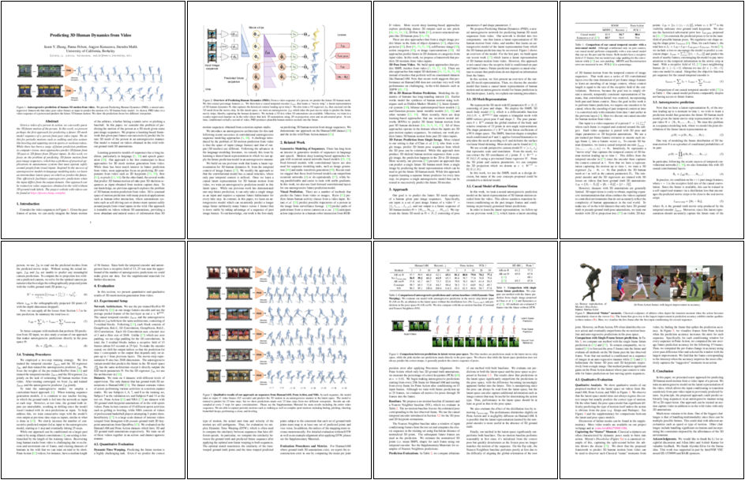

Given a video of a person in action, we can easily guess the 3D future motion of the person. In this work, we present perhaps the first approach for predicting a future 3D mesh model sequence of a person from past video input. We do this for periodic motions such as walking and also actions like bowling and squatting seen in sports or workout videos. While there has been a surge of future prediction problems in computer vision, most approaches focus on predicting 3D future from 3D past or 2D future from 2D past inputs. In this work we solve the problem of predicting 3D future motion from past image sequences, which has a plethora of practical applications in robotics such as drones and self-driving cars that can operate safely around people from visual inputs. While autoregressive models are one of the most successful approaches in language modeling tasks, it requires the input and output to be in the same domain, which is not the case in this practical scenario of video to 3D motion prediction. We solve this problem by learning an intermediate latent space in which autoregressive prediction is possible. Our approach can be trained on video sequences obtained in-the-wild without 3D ground truth labels.
|  |
Predicting 3D Human Dynamics from VideoJason Zhang, Panna Felsen, Angjoo Kanazawa, and Jitendra Malik |
We would like to thank Ke Li for insightful discussion and Allan Jabri and Ashish Kumar for valuable feedback. We thank Alyosha Efros for the Statue idea. This work was supported in part by Intel/NSF VEC award IIS-1539099 and BAIR sponsors.